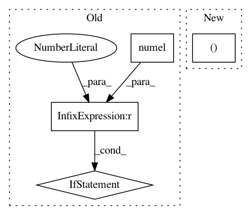

801c8b19931fb40774eda6dbb6917b6d1085ce8a,mmdet/core/bbox/assigners/max_iou_assigner.py,MaxIoUAssigner,assign,#MaxIoUAssigner#Any#Any#Any#Any#,43
Before Change
ignore_max_overlaps, _ = ignore_overlaps.max(dim=1)
ignore_bboxes_inds = torch.nonzero(
ignore_max_overlaps > self.ignore_iof_thr).squeeze()
if ignore_bboxes_inds.numel() > 0:
overlaps[ignore_bboxes_inds[:, 0], :] = -1
assign_result = self.assign_wrt_overlaps(overlaps, gt_labels)
return assign_result
def assign_wrt_overlaps(self, overlaps, gt_labels=None):
After Change
ignore_overlaps = bbox_overlaps(
gt_bboxes_ignore, bboxes, mode="iof")
ignore_max_overlaps, _ = ignore_overlaps.max(dim=0)
overlaps[:, ignore_max_overlaps > self.ignore_iof_thr] = -1
assign_result = self.assign_wrt_overlaps(overlaps, gt_labels)
return assign_result
In pattern: SUPERPATTERN
Frequency: 3
Non-data size: 4
Instances
Project Name: open-mmlab/mmdetection
Commit Name: 801c8b19931fb40774eda6dbb6917b6d1085ce8a
Time: 2019-02-13
Author: chenkaidev@gmail.com
File Name: mmdet/core/bbox/assigners/max_iou_assigner.py
Class Name: MaxIoUAssigner
Method Name: assign
Project Name: open-mmlab/mmdetection
Commit Name: b69667001f250a54a37129a000a8d5160e047239
Time: 2019-12-24
Author: erotemic@gmail.com
File Name: mmdet/core/bbox/assigners/max_iou_assigner.py
Class Name: MaxIoUAssigner
Method Name: assign_wrt_overlaps
Project Name: cornellius-gp/gpytorch
Commit Name: b2951813547426828d313a80c52de8a619e99731
Time: 2018-11-26
Author: gpleiss@gmail.com
File Name: gpytorch/lazy/constant_mul_lazy_tensor.py
Class Name: ConstantMulLazyTensor
Method Name: _quad_form_derivative